GitHub Repository: https://github.com/youssefdaoud133/Computer-Vision-ImageProcessor
| Name | Student Code |
|---|---|
| Mai Mahmoud Mohamed | 9230934 |
| Malak Saad | 9230902 |
| Manar Yousry Ebaid Ali | 9230908 |
| Yasmeen Badr | 9230986 |
| Youssef Daoud | 9231011 |
This application is a specialized image processing workbench built in C++17 using wxWidgets for the GUI, FFTW3 for Fast Fourier Transform operations, and OpenCV for Canny edge detection and noise RNG.
Key capabilities:
| Category | Features |
|---|---|
| Edge Detection | Sobel, Roberts, Prewitt (manual), Canny (OpenCV) |
| Histogram | Equalization, Normalization, Live CDF display |
| Noise Addition | Uniform, Gaussian, Salt & Pepper |
| Spatial Filtering | Average (Box), Gaussian, Median |
| Frequency Filtering | FFT Low-Pass, High-Pass, Band-Pass, Band-Stop |
| Hybrid Image | FFT-based multi-image fusion (Ideal / Gaussian) |
| Undo History | Branchless snapshot stack |
The project follows a Modified MVC (Model-View-Controller) pattern adapted for wxWidgets's event-driven loop.
┌─────────────────────────────────────────────────────────────────┐
│ Application │
│ ┌──────────┐ spawns ┌───────────────────────────────┐ │
│ │ MainFrame│ ──────────▶ │ ImageFrame │ │
│ │ │ │ ┌─────────┐ ┌────────────┐ │ │
│ │ Upload │ │ │ImagePanel│ │HistogramPnl│ │ │
│ │ Hybrid │ │ │ (View) │ │ (View) │ │ │
│ └──────────┘ │ └────┬────┘ └────────────┘ │ │
│ │ │ calls │ │
│ │ ┌────▼──────────────────────┐│ │
│ │ │ Filtering (Engine) ││ │
│ │ │ stateless static methods ││ │
│ │ └───────────────────────────┘│ │
│ └───────────────────────────────┘ │
└─────────────────────────────────────────────────────────────────┘
Separation of concerns:
Filtering class — pure algorithmic logic, no UI dependencies.ImagePanel, HistogramPanel — render pixels, draw histograms.ImageFrame — routes toolbar events → Filtering → ImagePanel.App (App.h / App.cpp)The main wxApp subclass. Contains OnInit() which creates and shows the MainFrame. Entry point via wxIMPLEMENT_APP(App).
MainFrame (MainFrame.h / MainFrame.cpp)The launcher window. Provides two actions:
- Upload Images — opens a multi-selection wxFileDialog; each path spawns an ImageFrame.
- Hybrid Image — a guided three-step flow: pick Image A → pick Image B → configure parameters (role, filter type, cutoff frequencies) → compute and display result.
ImageFrame (ImageFrame.h / ImageFrame.cpp)The core editing window. Contains:
- A horizontal toolbar with all filter actions.
- An ImagePanel (centre, 3 parts) for rendering.
- A right sidebar (1 part) with live HistogramPanel and history wxListBox.
On every filter action, ImageFrame:
1. Calls the appropriate Filtering::* static method.
2. Calls m_imagePanel->SetImage(result).
3. Calls RefreshHistogram() to update the sidebar.
4. Calls PushHistory(label) to log the snapshot.
ImagePanel (ImagePanel.h / ImagePanel.cpp)A wxPanel rendering subclass. Stores a wxImage (the working pixel buffer) and a wxBitmap (the display-resolution scaled version). On EVT_SIZE, it recomputes m_scaledBitmap preserving aspect ratio. On EVT_PAINT, it blits the bitmap centred in the panel.
HistogramPanel (HistogramPanel.h / HistogramPanel.cpp)Draws a live bar chart of per-channel R, G, B intensity frequencies (0–255) and overlays the smoothed CDF curve. Called via Update(newImage) after each filter action.
HistogramFrame (HistogramFrame.h / HistogramFrame.cpp)A standalone wxFrame wrapper that hosts a HistogramPanel as a popup when the user clicks the "Histogram" toolbar button.
Filtering (Filtering.h / Filtering.cpp)The algorithm engine — 1 082 lines of pure C++ math. All methods are static. Accepts const wxImage& and returns a new wxImage. Never touches UI.
Dependencies:
- <fftw3.h> — FFT forward/inverse transforms.
- <opencv2/opencv.hpp> — Canny edge detection, colour conversions.
- <cmath>, <algorithm>, <random>, <vector> — standard library.
wxImage stores pixels as a contiguous unsigned char* in RGB-interleaved format:
Index: 0 1 2 3 4 5 6 7 8 ...
Channel: R0 G0 B0 R1 G1 B1 R2 G2 B2 ...
Access formula for pixel (x, y) in an image of width W:
base_index = (y * W + x) * 3
R = data[base_index]
G = data[base_index + 1]
B = data[base_index + 2]
All arithmetic on pixel values uses:
static inline unsigned char Clamp(int v) {
return static_cast<unsigned char>(v < 0 ? 0 : v > 255 ? 255 : v);
}
This prevents overflow/underflow without branchy if-chains.
FFT operations allocate FFTW-aligned complex arrays:
fftw_complex* in = fftw_malloc(sizeof(fftw_complex) * N); // input
fftw_complex* out = fftw_malloc(sizeof(fftw_complex) * N); // spectrum
fftw_complex* filtered = fftw_malloc(sizeof(fftw_complex) * N); // masked spectrum
fftw_complex is double[2] — index [0] = real part, [1] = imaginary part.
After the inverse FFT, the result is divided by N because FFTW is unnormalised:
IDFT output[i] = (sum of spectrum) → must divide by N to recover original scale
std::vector<wxImage> m_historyImages; // deep copies of pixel buffers
std::vector<wxString> m_historyLabels; // human-readable filter names
The wxListBox mirrors these vectors. Selection of an older entry truncates future entries (branchless undo).
Sobel uses two 3×3 kernels to approximate the horizontal ($G_x$) and vertical ($G_y$) image gradients:
$$G_x = \begin{bmatrix} -1 & 0 & 1 \ -2 & 0 & 2 \ -1 & 0 & 1 \end{bmatrix}, \quad G_y = \begin{bmatrix} -1 & -2 & -1 \ 0 & 0 & 0 \ 1 & 2 & 1 \end{bmatrix}$$
Magnitude: $$|G| = \sqrt{G_x^2 + G_y^2}$$
Clamped to $[0, 255]$ and stored in a grayscale image.
Diagonal 2×2 difference operators:
$$G_x = p_{(x,y)} - p_{(x+1,y+1)}, \quad G_y = p_{(x+1,y)} - p_{(x,y+1)}$$
Sensitive to diagonal edges; computationally minimal.
Same framework as Sobel but equal weights — no centre-pixel emphasis:
$$G_x = \begin{bmatrix} -1 & 0 & 1 \ -1 & 0 & 1 \ -1 & 0 & 1 \end{bmatrix}, \quad G_y = \begin{bmatrix} -1 & -1 & -1 \ 0 & 0 & 0 \ 1 & 1 & 1 \end{bmatrix}$$
Multi-stage algorithm: 1. Gaussian blur (5×5, σ=1.4) — suppresses noise. 2. Sobel gradient computation. 3. Non-maximum suppression — thins edges to 1-pixel width. 4. Double thresholding (low=50, high=150) + hysteresis — removes weak/false edges.
Goal: Redistribute intensity values to maximise contrast.
Steps:
Where $n$ = total pixel count.
Goal: Linearly map $[\min, \max]$ of current intensities to $[0, 255]$.
$$\text{out}[i] = \text{round}!\left(\dfrac{v - v_{\min}}{v_{\max} - v_{\min}} \times 255\right)$$
For each channel byte, adds a random integer in $[\text{low},\, \text{high}]$ using std::uniform_int_distribution.
new_pixel = Clamp(old_pixel + rand(low, high))
Uses std::normal_distribution<double>(mean, stddev) to generate per-channel offsets drawn from $\mathcal{N}(\mu, \sigma^2)$.
Randomly selects density × W × H pixel positions, sets half to 255 (salt) and half to 0 (pepper) across all three channels simultaneously.
All three share the ApplyKernel() helper that uses clamp-to-edge padding for border pixels.
Kernel: uniform $k \times k$ matrix with all weights = $\dfrac{1}{k^2}$.
Kernel built analytically from: $$K(x,y) = e^{-\dfrac{x^2 + y^2}{2\sigma^2}}$$
Normalised so all weights sum to 1. Result: smooth blur without ringing.
For each pixel, collects the $k \times k$ neighbourhood into three separate vectors (R, G, B), sorts them, and takes the middle element. Effective at removing salt-and-pepper noise while preserving sharp edges.
Pipeline for all FFT filters:
wxImage (spatial)
│
▼ ImageToDoubleArray()
double[] grayscale values
│
▼ fftw_plan_dft_2d (FORWARD)
fftw_complex[] spectrum F(u,v)
│
▼ Apply transfer function H(u,v)
fftw_complex[] filtered G(u,v) = F(u,v) · H(u,v)
│
▼ fftw_plan_dft_2d (BACKWARD)
double[] spatial result / N
│
▼ DoubleArrayToImage() → normalise [0,255]
wxImage (filtered)
Frequency coordinate system (FFTW layout):
FFTW places DC at index (0,0). To compute the true distance from DC:
int fx = (x <= width/2) ? x : x - width;
int fy = (y <= height/2) ? y : y - height;
double D = sqrt(fx*fx + fy*fy);
| Type | Formula |
|---|---|
| Ideal | $H = 1$ if $D \leq D_0$, else $0$ |
| Gaussian | $H = e^{-D^2 / (2D_0^2)}$ |
Small $D_0$ → narrow passband → blurrier image.
| Type | Formula |
|---|---|
| Ideal | $H = 0$ if $D \leq D_0$, else $1$ |
| Gaussian | $H = 1 - e^{-D^2 / (2D_0^2)}$ |
High-pass naturally zeros the DC component ($D=0 \Rightarrow H=0$), so flat regions become dark in the output.
Passes only frequencies in $[D_{\text{low}},\, D_{\text{high}}]$:
$$H = \begin{cases} 1 & D_{\text{low}} \leq D \leq D_{\text{high}} \ 0 & \text{otherwise} \end{cases}$$
Complement of band-pass — rejects frequencies in range, useful for removing periodic noise:
$$H = \begin{cases} 0 & D_{\text{low}} \leq D \leq D_{\text{high}} \ 1 & \text{otherwise} \end{cases}$$
Concept: At close viewing distance, the human visual system perceives high-frequency detail. At far distance, low-frequency structure dominates. A hybrid image exploits this by combining:
$$\text{Hybrid} = \text{LowPass}(\text{Image A},\, D_{\text{low}}) + \text{HighPass}(\text{Image B},\, D_{\text{high}})$$
Implementation steps:
FilterLowFreqFFT(lowSrc, lowCutoff, filterType) → lowPart.FilterHighFreqFFT(highSrc, highCutoff, filterType) → highPart.for (long i = 0; i < n; ++i) {
int val = (int)lpData[i] + (int)hpData[i];
dst[i] = Clamp(val);
}
UI parameters exposed to user:
| Parameter | Default | Description |
|---|---|---|
| Role | A=Low, B=High | Which image contributes low/high frequencies |
| Filter type | Gaussian | Ideal (hard cutoff) or Gaussian (smooth) |
| Low cutoff | 30 px | Radius of low-pass passband |
| High cutoff | 60 px | Radius of high-pass passband |
Timeline: Original → Filter1 → Filter2 → Filter3
↑
User selects here
and applies Filter4
↓
New Timeline: Original → Filter1 → Filter2 → Filter4
PushHistory(label) detects mid-stack selection and truncates the future branch before appending the new snapshot. This prevents logical inconsistencies (cannot "undo" to a state that was derived from a different edit path).
if (currentIdx < m_historyImages.size() - 1) {
// Erase everything after currentIdx
m_historyImages.erase(begin + currentIdx + 1, end);
m_historyLabels.erase(begin + currentIdx + 1, end);
// Rebuild listbox to reflect truncation
}
m_historyImages.push_back(snapshot.Copy());
The HistogramPanel re-renders on every Update() call:
hist[R]++, hist[G]++, hist[B]++.maxCount = max(hist[0..255]).The panel's minimum size is set to 220×220 px; it grows proportionally in full-screen mode alongside the sidebar's flex sizer.
Input image (original):
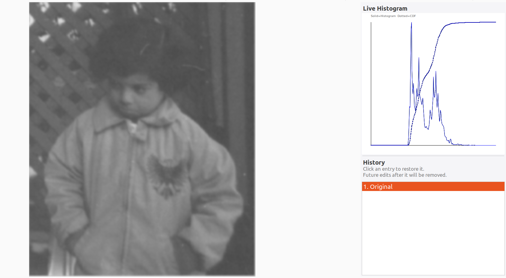
Sobel Edge Detection — detects both horizontal and vertical edges with strong central weighting:
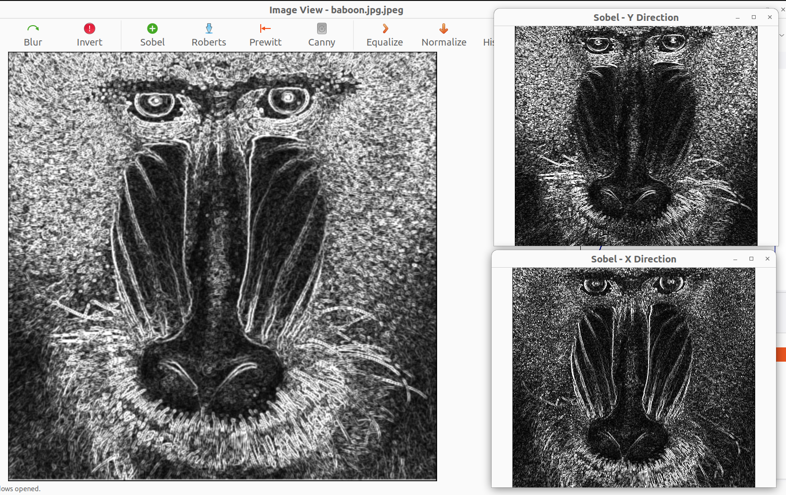
Prewitt Edge Detection — similar to Sobel but with uniform kernel weights, slightly less noise-robust:
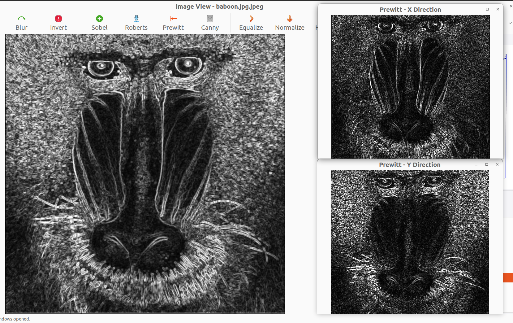
Roberts Cross Edge Detection — diagonal difference operator, very sharp but sensitive to noise:
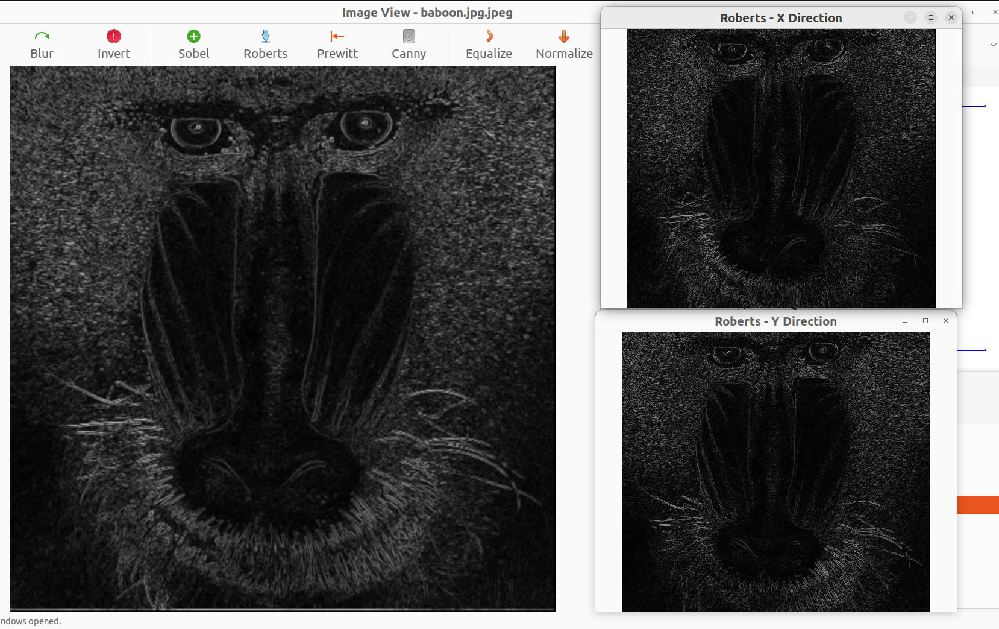
Canny Edge Detection (OpenCV) — multi-stage pipeline produces clean, thin, connected edges:
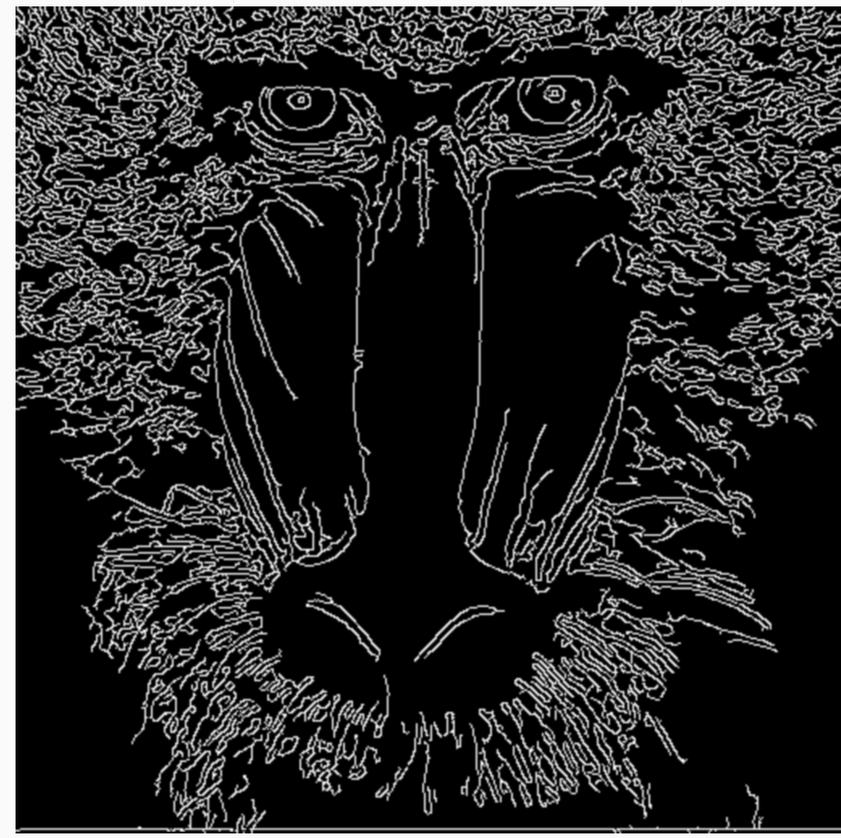
Original Image (no noise):
Uniform Noise — adds a uniformly distributed random offset $\in [\text{low}, \text{high}]$ to each channel:
Gaussian Noise — adds noise drawn from $\mathcal{N}(\mu, \sigma^2)$; higher $\sigma$ produces more severe degradation:
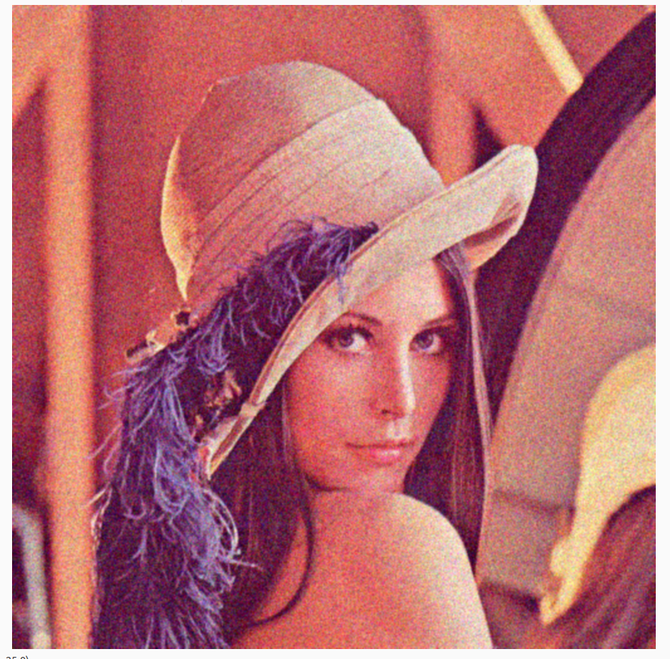
Salt & Pepper Noise — randomly sets a fraction of pixels to pure white (255) or pure black (0):
RGB Histogram — displays per-channel (R, G, B) intensity distribution with CDF overlay:
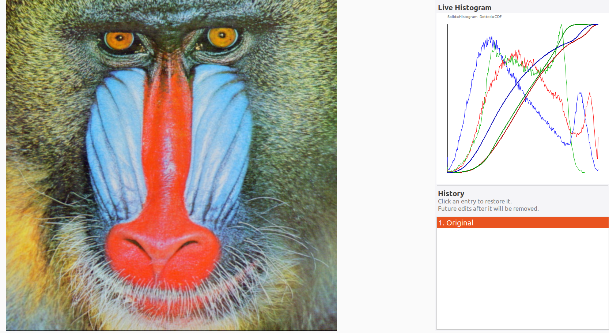
Grayscale Histogram — single-channel intensity distribution after grayscale conversion:
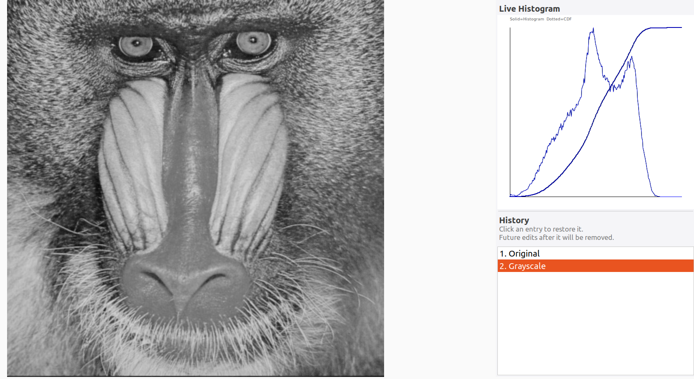
Equalization — before (low-contrast) vs. after equalization (enhanced contrast):
| Before | After |
|---|---|
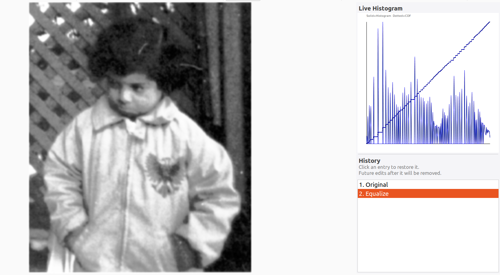 |
The CDF mapping redistributes pixel intensities to be as uniform as possible, visually "stretching" the contrast across the full 0–255 range.
Low-Pass FFT Filter (Gaussian, $D_0 = 30$) — removes high-frequency details, resulting in smooth blur while preserving overall structure:

High-Pass FFT Filter (Gaussian, $D_0 = 30$) — removes low-frequency content, leaving only fine edges and textures; flat regions appear dark:

Source Image A (contributes low-frequency content — viewed from far away):

Source Image B (contributes high-frequency content — visible up close):
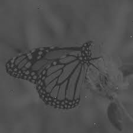
Hybrid Result:
$$\text{Hybrid} = \text{LowPass}(A,\; D_0 = 30) + \text{HighPass}(B,\; D_0 = 60)$$
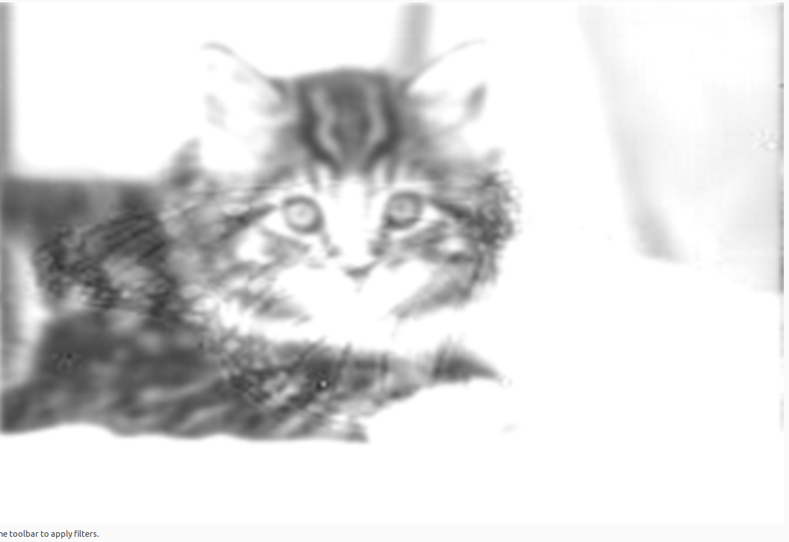
How to observe: View the hybrid image from a normal screen distance to see Image B's fine details. Step back or squint to see Image A's overall structure emerge.
| Dependency | Ubuntu/Debian Install |
|---|---|
| C++17 compiler (GCC / Clang) | sudo apt install build-essential |
| CMake ≥ 3.10 | sudo apt install cmake |
| wxWidgets 3.0+ | sudo apt install libwxgtk3.0-gtk3-dev |
| OpenCV | sudo apt install libopencv-dev |
| FFTW3 | sudo apt install libfftw3-dev |
git clone https://github.com/youssefdaoud133/Computer-Vision-ImageProcessor.git
cd Computer-Vision-ImageProcessor
cmake -B build
cmake --build build
./build/ImageProcessor
ImageFrame.Strictly ASCII in UI strings — avoid Unicode symbols (σ, etc.) in wxString::Format(). Some Linux locales cause library-level crashes on non-ASCII format strings.
Stateless Filtering — all algorithm logic stays in Filtering.cpp with no UI references. UI logic stays in ImageFrame.cpp. Never mix.
Always deep-copy before modifying — use image.Copy() before calling image.GetData() in any write path. wxImage is reference-counted; modifying shared data corrupts history snapshots.
FFTW normalisation — FFTW's IDFT does NOT normalise by N automatically. Always divide output by N:
cpp
resultData[i] = in[i][0] / N;
Memory cleanup order (FFTW) — always destroy plans before freeing buffers:
cpp
fftw_destroy_plan(forward);
fftw_destroy_plan(inverse);
fftw_free(in);
fftw_free(out);
fftw_free(filtered);
After every filter — call both RefreshHistogram() and PushHistory() to keep sidebar and undo stack in sync.
Odd kernel sizes — all spatial convolution kernels must be odd-sized. Both FilterGaussian and FilterMedian enforce this with if (kernelSize % 2 == 0) kernelSize++.
Documentation prepared by the team — SBME Computer Vision, Task 1 — March 2026.